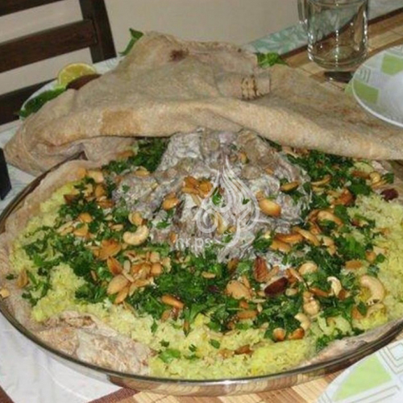
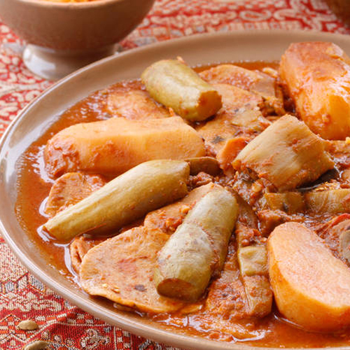

في قدر على النار، تقلى البصلة المفرومة في قليل من الزيت لتذبل.
تقطع الدجاجة إلى 8 قطع، تنظف وتغسل ثم توضع فوق البصل وتضاف البهارات ويقلى الخليط مع البصل.
توضع الطماطم المفرومة والثوم في الخلاط الكهربائي وتخلط قليلاً ثم تضاف إلى الدجاج وتترك على النارلمدة 10 دقائق.
يوضع الماء المغلي ومكعب مرق الدجاج فوق الصلصة ويترك القدر على النار حتى يغلي ثم يضاف الأرز ويراعى أن يكون الماء أعلى من الأرز بحوالي 1سم.
يترك الأرز على نار عالية حتى يغلى ثم تخفف النار ويترك القدر حتى ينضج تماماً لمدة 25 دقيقة.
يرفع القدر عن النار، تسكب الكبسة في طبق ويقدم ساخناً.

المنسف
المقادير
1 كيلوغرام لحم غنم، مقطع قطع كبيرة
2 كيلوغرام لبن رائب، روب
500 غرام لبن جميد
6 كوب أرز، قصير منقوع
2 بيض
1 بصلة
2 مكعب مرق دجاج
1/4 كوب زيت ذرة
1/2 كوب زيت
ملح حسب الذوق
1 ملعقة صغيره فلفل أسود
5 حب هيل
1 عود قرفة
1 ورقة غار
5 كوب ماء ساخنة، مغلية، لطبخ الأرز
ماء ساخنة
للتزيين: 2 ملعقة كبيرة لوز مقشر، ومقلي
2 ملعقة كبيرة بقدونس مفروم
طريقة التحضير
في قدر على النار، يسخن زيت الذرة، توضع اللحمة وتقلى حتى يتغير لونها ثم تغمر بالماء الساخن، تترك التغلي وتزال الزفرة التي تظهر على سطح الماء.
يضاف الهيل، عود القرفة، ورقة الغار، البصلة، الفلفل الأسود إلى اللحم وتترك لمدة 11/2 ساعة حتى تنضج ثم يرفع القدر ويصفى.
في الخلاط الكهربائي، يوضع اللبن الجميد ويخلط جيداً ثم يوضع في قدر على النار ويحرك حتى يغلي.
بهافي قدر آخر، يوضع اللبن الروب، البيض ويحرك بالخفاقة اليدوية حتى يختفي البيض ثم يوضع القدر على نار متوسطة ويحرك باستمرار بملعقة خشبية حتى يغلي اللبن.رات
يوضع الجميد المغلي فوق قدر اللبن ويحرك الخليط ثم يضاف مقدار ليتر من مرقة اللحمة المصفاة (يجب أن تكون جميع المكونات تغلي).
توضع اللحمة، مكعبي المرق، الملح إلى اللبن ويترك ليغلي للحصول على الكثافة المطلوبة ثم يرفع القدر عن النار.
يصفى الأرز من الماء، يوضع في قدر، يسخن الزيت، يوضع الأرز ويقلب ثم يضاف الماء المغلي، الملح ويترك على النار لينضج.
يسكب الأرز في طبق، يسقى بالقليل من اللبن، توضع فوقه اللحمة ثم يزين باللوز، البقدونس، يسكب اللبن في طبق عميق ويقدم ساخناً إلى جانب المنسف.

المطازيز
المقادير
3 كوب دقيق
1/2 ملعقة صغيره ملح
1 كيلوغرام لحم غنم، مقطع الى قطع كبيرة
2 كوسا، مقطعة الى شرائح
2 باذنجان متوسط الحجم، مقشّر ومقطع الى شرائح
1 يقطين، صغيرة ومقشرة ومقطعة الى شرائح
3 جزر، مقطعة الى شرائح
4 لومي (حامض مجفف)
1/2 كيلوغرام لوبياء خضراء
4 طماطم، مقطعة الى مكعبات
2 بصل حجم وسط، مفرومة ناعم
1 فلفل أحمر، حار مفروم
1/2 كوب سمن
1 ملعقة كبيرة معجون الطماطم
1/4 ملعقة صغيره فلفل أسود
1/4 ملعقة صغيره كزبرة جافة
1/4 ملعقة صغيره قرفة ناعمة
1/4 ملعقة صغيره هال مطحون
ملح حسب الذوق
1 بصل، مقطعة الى مكعبات
طريقة التحضير
لتحضير العجينة، يُنخل الدقيق ويضاف الملح وقرابة كوب من الماء ثم تُعجن المكونات الى أن تتحول إلى عجينة. تُغطّى بقطعة قماش وتُترك لترتاح لمدة 30 إلى 40 دقيقة.
لتحضير المطازيز، يُقلّى البصل بالسمن إلى أن يصبح ذهبي اللون ثم تضاف قطع اللحم، اللومي والفلفل الأحمر. تُمزج المكونات جيداً وتُترك على النار إلى أن يتغيّر لون اللحم بعض الشيء.
يضاف معجون الطماطم ويُترك الكلّ على نار هادئة لمدة 10 دقائق ثم تضاف مكعبات الطماطم، الفلفل الأسود، الكزبرة اليابسة، القرفة والهال.
يمزج الخليط جيداً ثم يُغمر بالماء. تُغطى القدر وتُترك على النار لمدة 45 الى 55 دقيقة حتى ينضج اللحم بعض الشيء.
في هذه الاثناء، تُسلق اللوبياء بالماء قليلاً، ثم تُصفّى.
تضاف اللوبياء وجميع الخضار المتبقية الى خليط اللحم، ثم تُغطى القدر وتُترك على نار متوسطة الى إن تنضج الخضار تماماً.
تُقسّم العجينة إلى كريات بحجم البيضة، ثم تُمدّ الكريات على شكل دوائر مسطحة وتضاف الى يخنة اللحم والخضار. تُترك القدر على نار متوسطة لمدة 10 إلى 15 دقيقة إضافية حتى ينضج العجين.
تُسكب اليخنة في طبق تقديم كبير وتُزين بمكعبات البصل المقلية.